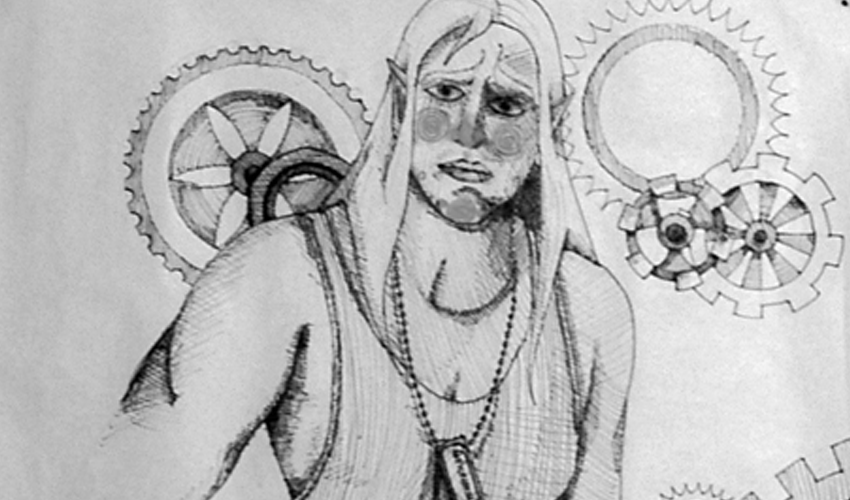
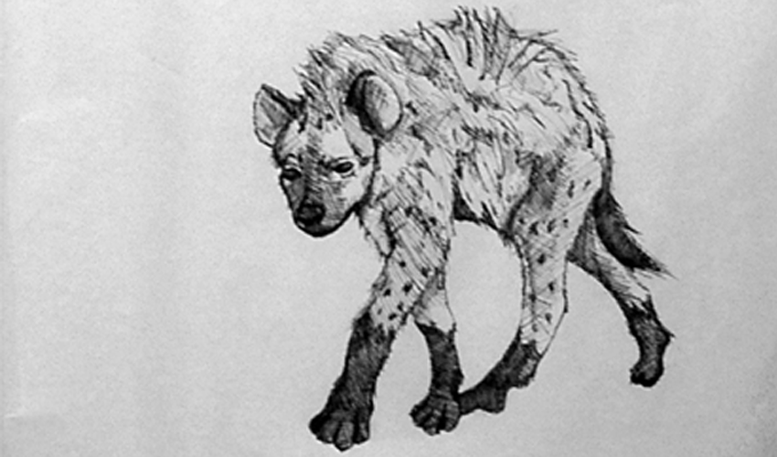
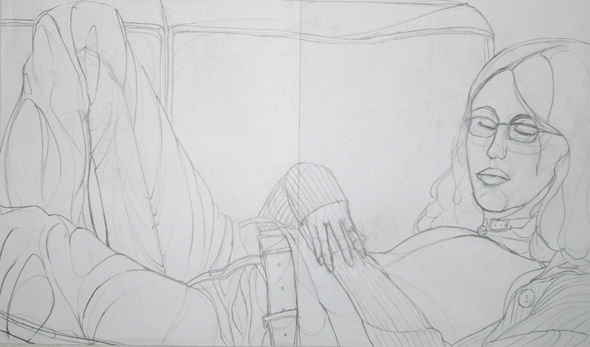
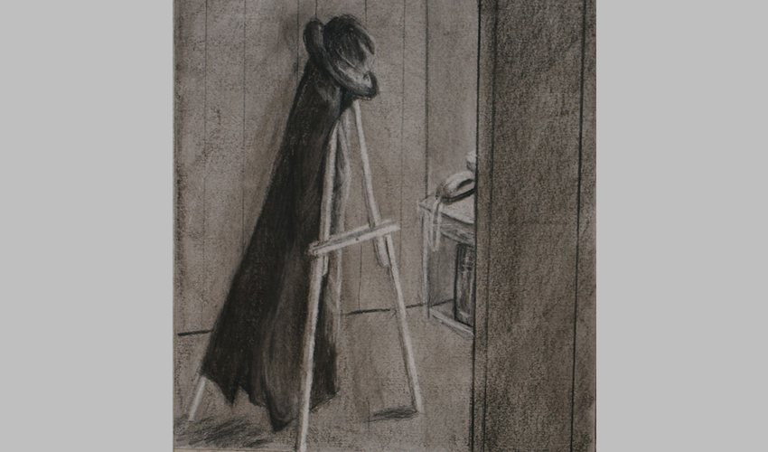

This is a drawing that was once going to be part of a book series. It is a drawing of a character from and role playing game that I used to play in. The book was going to chronicle the fictional characters life, mixing in drawings of herself and others around her. Made with pen and ink on rice paper, the book was intended to have a transparent feel with limited color.

The second drawing to appear from this fictional book this drawing of a hyena was also the intended title of the book. In the story of the main character, transforming into a hyena was one of her various powers.

A contour drawing example from my art school days, this drawing is actually quite large; the size of two Mayfair sheets taped together. It’s probably the only contour drawing I’ve ever done that I actually like. I asked a friend to model for me, and she happily obliged by napping on the couch.

Another art school example this charcoal drawing managed to capture a certain feel for me. A drawing of my coat and hat hanging off my easel, it stands out as a good example of the technique, but also for the ‘film noir’ mood it creates.